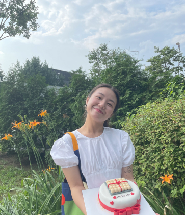

Seoha Kim

Summaray
I’m a UX/UI designer passionate about crafting user-centred solutions, with a deep interest in how everyday products shape human behaviour.
Education
- Bachelor of Civil Engineering - University of Sangmyung (2012-2016)
Experience
Blossom UX School, London, United Kingdom
March 2024 - October 2024
-
Project 1 : Bankids / Case Study
-
Led the creation of the brand identity with my team, including logo design, colour palette, focusing on child-appropriate visual identity, achieving a 4.5/5.0 rating in usability testing.
-
Conducted a survey of a primary school class of 20 students, aged 12, using Google Forms, to gather key insights and inform design decisions, helping kids engage more and learn financial concepts easily.
-
Project 2 : Calm / App Redesign
-
Analysed user reviews on the App Store to identify problems and created affinity maps based on user experience principles, enhancing the understanding of user behaviour.
-
Created script features for meditation videos to enhance accessibility and inclusivity, resulting in increased user satisfaction and improved retention rates.
-
Project 3 : Aesop / Responsive Website Redesign
-
Revamped the user interface of a responsive website to improve the overall user experience and leading to a 20% increase in user satisfaction scores.
-
Whales Coffee, Seoul, South Korea
November 2017 - April 2023
-
Self-employed
- Implemented a pre-order system driven by customer feedback to cut wait times during the morning rush, leading to a 15% increase in revenue.
-
Utilised strong communication skills to engage customers in conversation, enabling accurate identification of their preferences for personalised orders.
-
Junhan Co., Seoul, South Korea
December 2016 – March 2017
-
Civil Engineering Intern
-
Successfully delivered precise designs for complex projects, ensuring compliance and improving efficiency.
-
Collaborated with the team to resolve construction challenges, resulting in a 20% increase in project durability and extending the lifespan of structures by an average of 5 years.
Skills
- UX Research: User interview, usability testing, Empathy mapping, Affinity mapping, Persona development
- Interaction Design : Wireframing, Prototyping, Information Architecture
- Visual Design : UI Design, Style guide (Typography, colour)
- Toolkit : Figma
-
Programming (Basic) : HTML, CSS, JavaScript